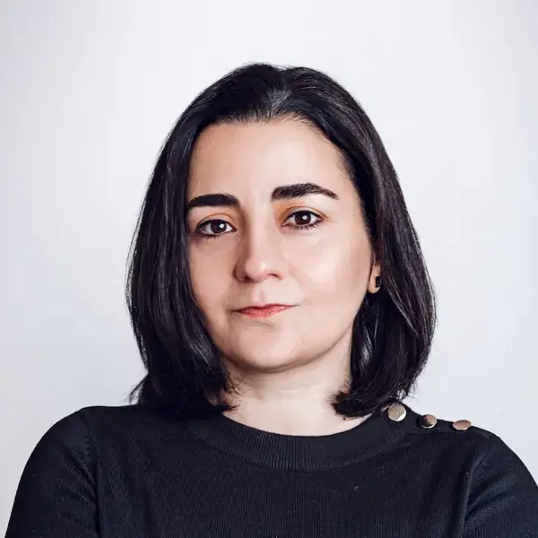

About

Yasemin is an Assistant Professor, Docent in the Automatic Control group at Chalmers University of Technology. She completed her Ph.D. at the Royal Institute of Technology (KTH), Sweden, in 2012. As a researcher at KTH, she was involved in the EU projects CogX (Cognitive Systems that Self-Understand and Self-Extend) and RoboHow (Web-enabled and Experience-based Cognitive Robots that Learn Complex Everyday Manipulation Tasks). Later, she worked as a post-doctoral researcher at University of Birmingham contributing to the EU project RoMaNs (Robotic Manipulation for Nuclear Sort and Segregation), and as a research scientist at ABB, Corporate Research, Sweden, coordinating the EU project SARAFun (Smart Assembly Robot with Advanced Functionalities). She also worked for a start-up in San Francisco Bay Area where she led the research on robotic grasp planning and manipulation for industrial tasks, also developing prototype systems capable of grasping various types of objects for different manipulation goals. She held a position of Senior Research Fellow in Machine Learning for Autonomous Robots in Statistical Machine Learning Group at University College London. She received the Best Paper Award at IEEE International Conference on Robotics and Automation for Humanitarian Applications (RAHA) in 2016 and the Best Manipulation Paper Award at IEEE International Conference on Robotics and Automation (ICRA) in 2013, and was IEEE/RSJ International Conference on Intelligent Robots and Systems (IROS) CoTeSys Cognitive Robotics Best Paper Award Finalist in 2013. Her research is focused on data driven learning for robotics applications with a focus on Bayesian non-parametrics. In specific she is interested in data efficient learning from multisensory data.
News
Our paper on "Grasp Transfer based on Self-Aligning Implicit Representations of Local Surfaces" has been accepted for publication in IEEE Robotics and Automation Letters (RA-L), January 2024.
Our paper on "A Unifying Variational Framework for Gaussian Process Motion Planning" has been accepted for publication in AISTATS 2024, July 2023.
Our NeurIPS 2023 workshop proposal submission, Touch Processing: a new Sensing Modality for AI, has been accepted, July 2023.
Our paper on "Neural Field Movement Primitives for Joint Modelling of Scenes and Motions" has been accepted for publication in the IEEE/RSJ International Conference on Intelligent Robots and Systems (IROS), June 2023.
Our paper on "Sliding Touch-based Exploration for Modeling Unknown Object Shape with Multi-finger Hands" has been accepted for publication in the IEEE/RSJ International Conference on Intelligent Robots and Systems (IROS), June 2023.
Our paper on "Safe Trajectory Sampling in Model-based Reinforcement Learning" has been accepted for publication in the IEEE 19th International Conference on Automation Science and Engineering (CASE), May 2023.
Our paper on "Enhanced GPIS learning based on local and global focus areas" has been accepted for publication in the EEE International Conference on Robotics and Automation (ICRA), January 2023.
Our paper on "GraspAda: Deep Grasp Adaptation through Domain Transfer" has been accepted for publication in the EEE International Conference on Robotics and Automation (ICRA), January 2023.
Our paper on "Enhanced GPIS learning based on local and global focus areas" has been accepted for publication in the IEEE Robotics and Automation Letters (RA-L), July 2022.
Our paper on "Bayesian Optimization based Nonlinear Adaptive PID Design for Robust Control of the Joints at Mobile Manipulators" has been accepted to be presented at IEEE 18th International Conference on Automation Science and Engineering (CASE), in August 2022.
Our team from Chalmers and Wuhan University participated in OCRTOC and ranked 4th, congrats to Yiting Chen, Junnan Jiang, Ahmet Tekden, and Miao Li.
Our IROS workshop proposal on the role of uncertainty and how it is tackled in robotic grasping and manipulation has been accepted. The workshop will take place late October 2022.
I will work as an AE for IEEE Transactions on Robotics (T-RO).
Our work, "DURableVS: Data-efficient Unsupervised Recalibrating Visual Servoing via online learning in a structured generative model" has been accepted for presentation at IEEE ICRA 2022.
I will work as an AE for IEEE IROS 2022.
I was invited to participate in the workshop on The Future of Tactile Sensing: Applications and Challenges, hosted by Facebook AI Research, November 22-23, 2021.
Invited talk: A Benchmarking protocol for comparing performances of grasp planning algorithms, IEEE IROS 2021 workshop on Benchmarking of robotic grasping and manipulation: protocols, metrics and data analysis, September 27, 2021.
I will work as an AE for IEEE ICRA 2022.
Our paper "Simultaneous Tactile Exploration and Grasp Refinement for Unknown Objects", has been accepted for publication in the IEEE Robotics and Automation Letters (RA-L) and presentation at the 2021 IEEE International Conference on Robotics and Automation (ICRA).
A CHAIR project proposal on mobile manipulation in collaboration with VOLVO is accepted, March 2021.
A WARA-WASP project proposal on mobile manipulation in collaboration with KTH, Lund University, Orebro University, Linkoping University, ABB Corporate Research, Ericsson, and Algoryx is accepted, February 2021.
We are organizing an ICRA workshop: Bridging the Gap between Data-driven and Analytical Physics-based Grasping and Manipulation II .
I will work as an AE for IEEE IROS 2021.
In collaboration with the journal Frontiers in Robotics and AI, we are editing an open-access article collection on: Bridging the Gap between Data-driven and Analytical Physics-based Grasping and Manipulation.
I started working as an AE for IEEE Robotics and Automation Letters (RA-L), November 2020.